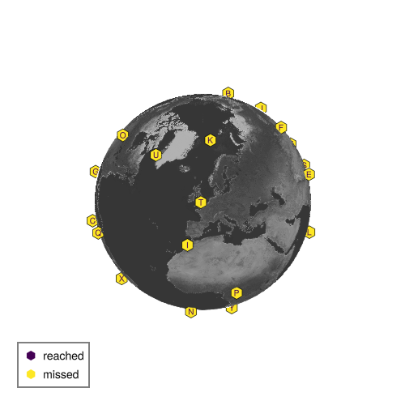

Destination
A Destionation is a SpeedyWeather callback that will check after every time step how close particles (see Particle advection) are and decide whether one particle reached that destination (within a given radius) and mark itself as reached and deactivate that particle.
Predefined destinations
For the TravellingSailorProblem there are 26 predefined destinations. In analogy to delivering Christmas presents to children around the world these are
using TravellingSailorProblem
children = TravellingSailorProblem.children(26)Destination( Ana, -157.8˚E, 21.3˚N, reached=false)
Destination( Babu, 158.7˚E, 53.0˚N, reached=false)
Destination( Carla, -74.1˚E, 4.7˚N, reached=false)
Destination( Diego, 151.2˚E, -33.9˚N, reached=false)
Destination( Elif, 85.3˚E, 27.7˚N, reached=false)
Destination(Felipe, 106.9˚E, 47.9˚N, reached=false)
Destination( Gael, -96.7˚E, 17.1˚N, reached=false)
Destination(Haruko, 115.9˚E, -31.9˚N, reached=false)
Destination( Isla, -7.6˚E, 33.6˚N, reached=false)
Destination( Jose, 139.7˚E, 35.7˚N, reached=false)
Destination( Karim, 15.6˚E, 78.2˚N, reached=false)
Destination( Lola, 73.5˚E, -4.6˚N, reached=false)
Destination( Maeve, -70.7˚E, -53.2˚N, reached=false)
Destination( Noah, -5.9˚E, -15.9˚N, reached=false)
Destination( Omar, -97.1˚E, 49.9˚N, reached=false)
Destination( Priya, 15.3˚E, 4.4˚N, reached=false)
Destination(Quirin, -61.5˚E, 10.5˚N, reached=false)
Destination(Rasmus, 115.0˚E, -8.7˚N, reached=false)
Destination(Saanvi, 106.8˚E, 10.8˚N, reached=false)
Destination( Tomas, -1.3˚E, 51.8˚N, reached=false)
Destination( Uma, -51.7˚E, 64.2˚N, reached=false)
Destination( Vera, 121.0˚E, 14.6˚N, reached=false)
Destination(Walter, 166.7˚E, -77.8˚N, reached=false)
Destination( Xia, -47.9˚E, -15.8˚N, reached=false)
Destination( Yuki, 18.5˚E, -33.9˚N, reached=false)
Destination( Zara, -169.9˚E, -21.2˚N, reached=false)Their names are in alphabetical order for easier identification when Visualising destinations, their respective locations are the same for every user of TravellingSailorProblem. Initially they are set to reached=false as they haven't received any parcels (=Christmas present) yet. You can create fewer destinations which will just pick the first N of those 26, e.g.
children = TravellingSailorProblem.children(5)Destination( Ana, -157.8˚E, 21.3˚N, reached=false)
Destination( Babu, 158.7˚E, 53.0˚N, reached=false)
Destination( Carla, -74.1˚E, 4.7˚N, reached=false)
Destination( Diego, 151.2˚E, -33.9˚N, reached=false)
Destination( Elif, 85.3˚E, 27.7˚N, reached=false)Visualising destinations
The 26 destinations (children) are somewhat uniformly distributed all over the globe in various places (all on land). You can visualise those locations with
using TravellingSailorProblem, GLMakie, GeoMakie
children = TravellingSailorProblem.children(26)
globe(children)
which marks every destination (=child) with the first letter of their name. Choosing fewer children will only visualise those. If you want the perspective on a particular destination you can pass that on as perspective = destination, e.g. children[2] is a destination (children is a tuple of destinations) if you have at least 2 children defined
using TravellingSailorProblem, GLMakie, GeoMakie
children = TravellingSailorProblem.children(26)
globe(children, perspective=children[2])
In this documentation that visualisation is static but if you do this in the Julia REPL you will get an interactive visualisation where you can rotate and zoom. You can also provide a perspective with coordinates, e.g. perspective = (0, 52) to look down onto London, UK.
You can also change the altitude, typical values are between 1e6 (country level) and 2e7 (global view), e.g. to zoom onto London do
globe(children, perspective=(0, 52), altitude=1e6)
By default a "shadow" is visualised below each destination to illustrate its radius a particle has to reach for the destination to be marked "reached". Unreached/missed destinations are marked in yellow but they turn purple if a particle gets within the radius!